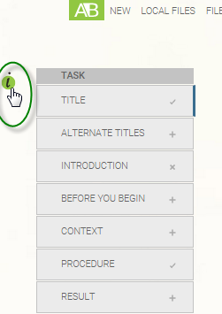

You can add properties about each topic.
Topic properties add information about the topic so that it can be tracked or
leveraged by other systems. The important topic-level properties include the following:
- authors
- Anyone who contributed to the content of the topic. You can list as many
as you want.
- created
- Creation date is the date the topic was finished being drafted or was
approved. Go live is the date it is meant to be published or become
active. Expiry is the date by which the content is no longer correct.
- revised
- The date when the content was last updated, with associated optional go
live and expiry dates. You can add as many revised dates as you need,
one for each revision of the topic.
- resourceid
- The unique identifier that can be leveraged by another system. For
example, the resource ID can link a particular topic to a particular
application page for context-sensitive help.
- source
- The document, expert, or system where you obtained the information
written in this topic.
Always use just the metadata that applies to your content and that all authors have
agreed to use consistently.
-
In your topic, select the properties icon.

-
Fill out the properties you need, adding items when required.
-
Select Save.
Your topic now includes information about the content, which
can be used to track content changes and leveraged by other systems.